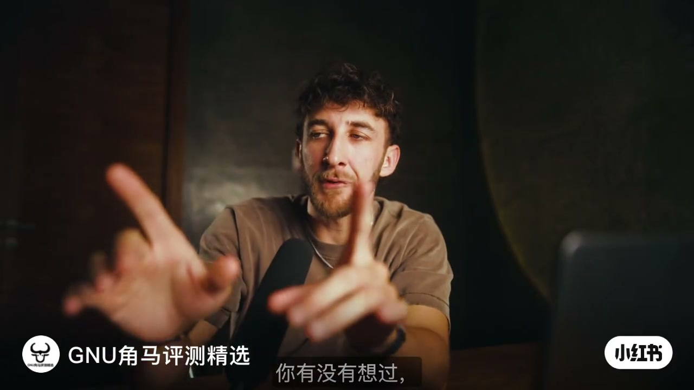
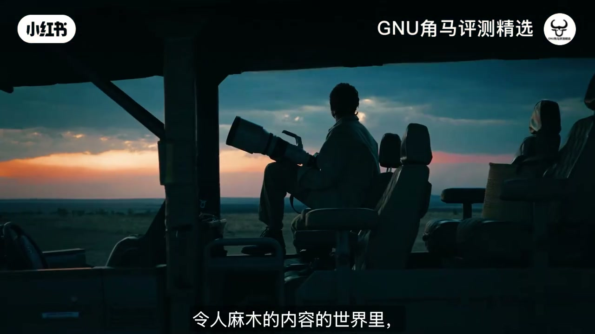
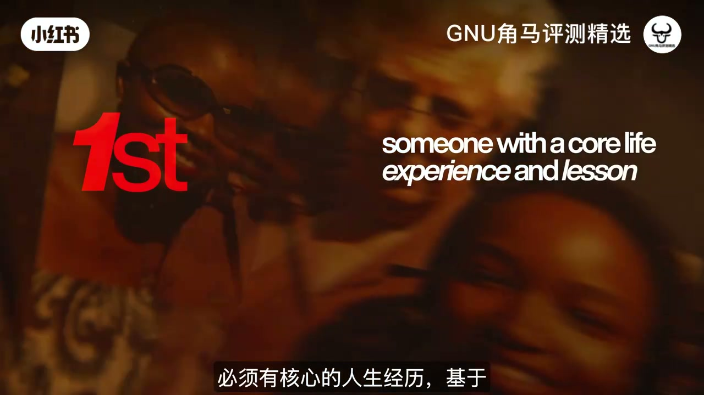
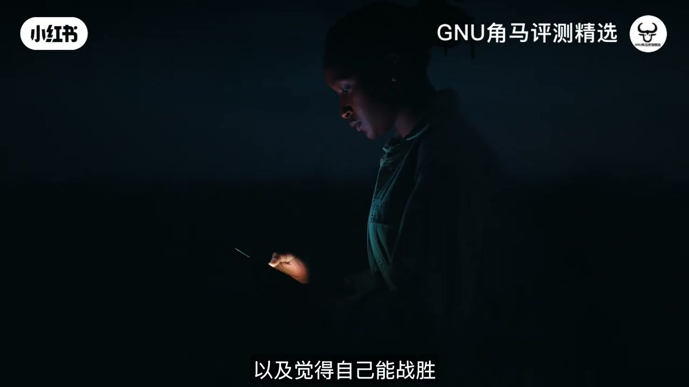
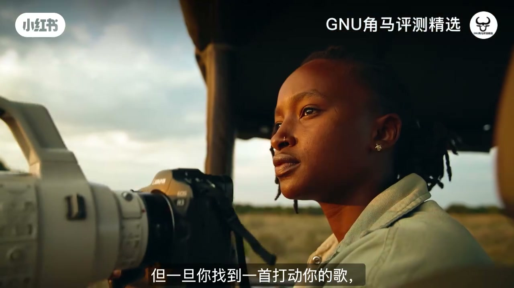
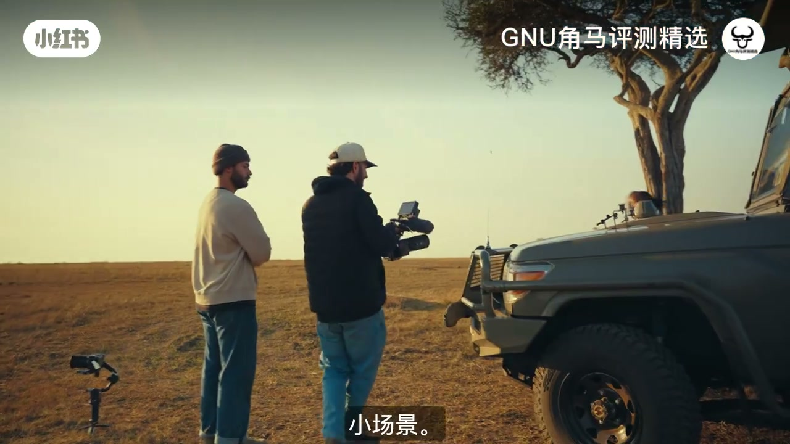
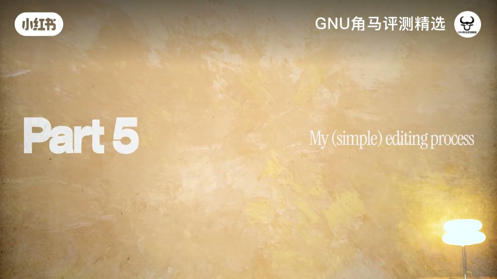
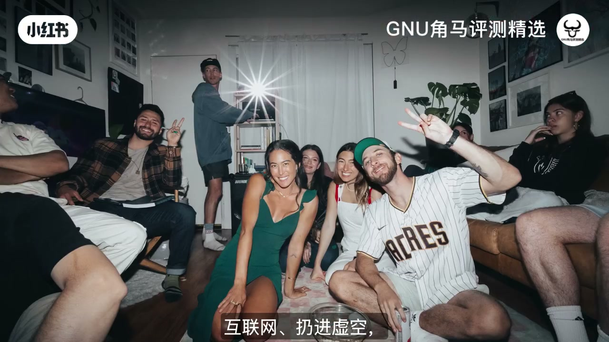

内容要点
这是一堂以「最新影片《母狮》」为案例的单人/小团队电影感工作流：故事人选 → 情感与音乐 → 可视化筹备 → 拍摄节奏 → 剪辑声音与调色 → 人情致谢。硬字幕是中文，ASR 几乎没跟上口播，章节叙述按字幕时间线重建。
知识结构
真正电影感远不止大机器与酷炫画面；在令人麻木的内容世界里，要做让人「感受到」的东西。
把品牌片做成「关于一个人」：挣扎、热情、敢示弱、愿参与、独特且能让你先被打动。
先定情绪词（如力量），用 Musicbed 找能闭眼沉浸的歌，再写契合音乐的旁白。
想法、情绪板、脚本、预算、故事板收进一块可视化看板，便于自己理清、也便于给团队看。
约一半按镜头单；另一半当「墙上苍蝇」，留小场景给真实瞬间——作者认为这正是真实感来源。
粗剪对齐旁白情绪 → 指导角色录旁白 → 声音设计分层且微妙 → 最后才调色（自研 LUT）。
成片后给帮过你的人发消息致谢；别只把作品扔进互联网虚空——关系也是完成度。
一个人拍出电影感：先找到那个好故事的人，让情感与音乐带旁白，用看板收拢混乱，拍摄留一半给真实，剪辑里先声后色，成片记得回谢。
00:00-01:10电影感不等于大机器
开场是讲述者双手比出取景框：你有没有想过，最爱的电影为什么真正有电影感？他马上拆掉器材迷信——承诺这远不止「大机器和酷炫的画面」。

画面切到旅行车里、金小时地平线前的长焦剪影。字幕点题：在令人麻木的内容世界里，你能做的头号要事，是去创作能让人「感受到」的东西。本期要分享他拍最新影片《母狮》时用到的五个技巧，并预告几乎没有电影人再这么做的一个加分项。

约一分钟处他用「你已经被锁定了」式钩子收束开场，转入正题：如何找到故事。
01:10-03:30先找到「那一个人」
案例起点很具体：公司找他拍品牌片。他没有做成产品说明书，而是问——能不能把这部片子拍成「关于一个人」？随后给出选角过滤器（与笔记文案一致）：
- 有过挣扎与可讲述的人生课题（核心经历）；
- 对某件事有热情；
- 敢示弱、愿意敞开心扉；
- 主动愿意参与拍摄；
- 独特到能先让创作者自己感到真实情感——「如果他们让我感受到，观众也会感受到真实的影片。」

人物侧写落在身份认同、归属感，以及「觉得自己能战胜」的内在冲突。他强调：如果你连在自家后院都讲不出故事，就别指望一到肯尼亚之类的远方就自动有故事——故事真的无处不在，关键是去了解对方、问对问题。

03:30-05:10情感先行：先选歌再写旁白
「这一切从情感开始。」在真正想好镜头之前，他先为影片定情绪词（对 Imara 一例：力量等），再用 Musicbed 找能让自己闭眼就沉浸进去的曲子。找到打动你的歌之后，才开始按音乐节奏搭建旁白与叙事弧——人物必须克服什么、如何成长，把访谈信息写成「契合音乐的旁白」。

05:10-07:25Milanote 把混乱变成看板
想法还只是杂乱念头时，他全部丢进专门搭建的 Milanote 看板：情绪板、脚本、预算表、拍摄素材、故事板、甚至可在看板里直接放音乐。对「思维非常混乱」的人，可视化一眼看清全局；也可以把同一块板甩给协作方，「他们就能」看懂项目。
他称这是把想法推进成有条理项目的必需品——总好过把随机念头倾倒进一份空白文档。片中穿插 Milanote 推广与免费试用链接，属作者合作推广，读者可自行判断是否需要该工具。
07:25-10:35一半规划，一半墙上苍蝇
下一阶段是准备器材去拍摄。他给自己定了有点「电影圈争议」的配比：大约 50% 按计划执行镜头单；另外 50% 完全不写死——当墙上的苍蝇，跟着人物真实状态走，专门给「小场景」留空间。

理由很直白：没有计划的那些镜头，往往是因为真实发生了才好看；死板列进镜头单，反而容易把人物「放进表演」。代价是你要会保持能量、会转向、会果断——这需要练习。出了问题就退后一步，问「我们怎样做出一个」仍成立的选择，而不是死磕清单。
10:35-14:00剪辑：旁白、声音、调色
「第五部分，剪辑。」字幕与板书同步出现 Part 5 / My (simple) editing process。流程按他口述大致是：
- 先出一版简单粗剪，把镜头按旁白想表达的情绪排好；
- 请角色本人录旁白，并坐下来指导：该悲伤时就要听起来悲伤——语气与语调极重要；
- 大约剪到九成时开始分层做声音设计：转场声、环境声、现场录到的真实声；强调微妙，目的是让观众沉浸，而不是炫技转场；
- 声音铺好之后，「当然就是调色」——他用自研 LUT，两步把 LOG 转到 Rec.709 感，并推销 LUT（推广段落）。

14:00-16:28加分技巧：别扔进虚空
他一直预告的「几乎没人再做」的小技巧，其实很朴素：影片上线或完成后，给帮过你的人发短信致谢——「你们不知道你们的帮助」有多重要。哪怕只请了几个人，致谢也会让项目显得完整得多，并巩固关系；而不是剪完就扔进互联网虚空。

收尾回到开场承诺：一起讲更好的故事、彼此帮助；并再次挂出 Milanote 支持与 LUT、正片观看入口。语气偏社群动员，可当行动号召而非硬指标。